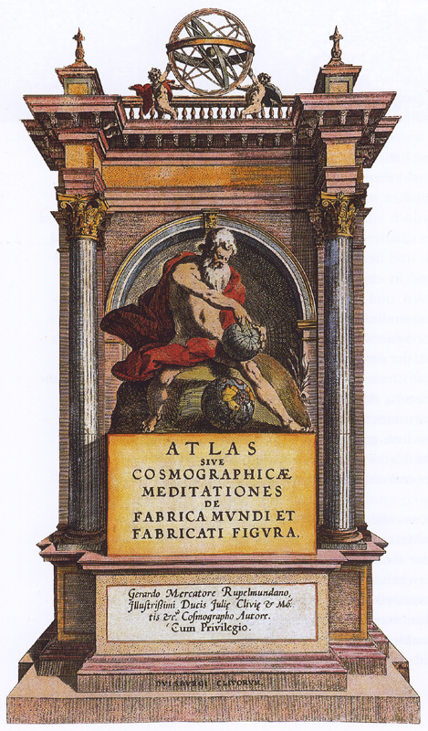
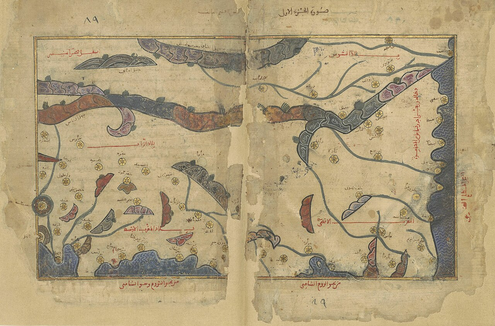

ATLAS
From Wikipedia, the free encyclopedia
This article is about a collection of maps. For the Titan condemned to hold the heavens on his shoulders, see
Atlas (mythology). For the particle detector experiment, see
ATLAS experiment. For other uses, see Atlas (disambiguation).
Not to be confused with Atlus.

Frontispiece of the 1595 Atlas of Mercator
An atlas is a collection of maps; it is typically a bundle of maps of Earth or of a continent or region of Earth.
Atlases have traditionally been bound into book form, but today, many atlases are in multimedia formats. In addition to presenting geographical features and political boundaries, many atlases often feature geopolitical, social, religious, and economic statistics. They also have information about the map and places in it.
Etymology
The use of the word "atlas" in a geographical context dates from 1595 when the German-Flemish geographer
Gerardus Mercator published Atlas Sive Cosmographicae Meditationes de Fabrica Mundi et Fabricati Figura ("Atlas or cosmographical meditations upon the creation of the universe and the universe as created"). This title provides Mercator's definition of the word as a description of the creation and form of the whole universe, not simply as a collection of maps. The volume that was published posthumously one year after his death is a wide-ranging text but, as the editions evolved, it became simply a collection of maps and it is in that sense that the word was used from the middle of the 17th century. The neologism coined by Mercator was a mark of his respect for the Titan Atlas, the "King of Mauretania", whom he considered to be the first great geographer.
[1]
History of atlases

The Maghreb (south-up) in Muhammad al-Idrisi's Nuzhat al-Mushtāq (نزهة المشتاق في اختراق الآفاق), also known as the Tabula Rogeriana (12th century).
[2]
The first work that contained systematically arranged maps of uniform size representing the first modern atlas was prepared by Italian cartographer Pietro Coppo in the early 16th century; however, it was not published at that time, so it is conventionally not considered the first atlas. Rather, that title is awarded to the collection of maps Theatrum Orbis Terrarum by the Brabantian cartographer Abraham Ortelius printed in 1570.[citation needed]
Atlases published nowadays are quite different from those published in the 16th–19th centuries. Unlike today, most atlases were not bound and ready for the customer to buy, but their possible components were shelved separately. The client could select the contents to their liking, and have the maps coloured/gilded or not. The atlas was then bound. Thus, early printed atlases with the same title page can be different in contents. [3]
States began producing national atlases in the 19th century.
[4]
Types of atlases

World map Theatrum Orbis Terrarum (Theatre of the Orb of the World) by Abraham Ortelius, 1570
A travel atlas is made for easy use during travel, and often has spiral bindings, so it may be folded flat. National atlases in Europe are typically printed at a scale of 1:250,000 to 1:500,000;[a] city atlases are 1:20,000 to 1:25,000,[b] doubling for the central area (for example, Geographers' A-Z Map Company's A–Z atlas of London is 1:22,000 for Greater London and 1:11,000 for Central London).[c] [5] A travel atlas may also be referred to as a road map. [6]
A desk atlas is made similar to a reference book. It may be in hardback or paperback form.
There are atlases of the other planets (and their satellites) in the Solar System. [7]
Atlases of anatomy exist, mapping out organs of the human body or other organisms. [8]
Selected atlases
Main article: List of atlases
Some cartographically or commercially important atlases are:
17th century and earlier:
- Theatrum Orbis Terrarum 1570 atlas by Abraham Ortelius
- Atlas Sive Cosmographicae Meditationes de Fabrica Mundi et Fabricati Figura (Mercator, Duisburg, in present-day Germany, 1595)
- Atlas Novus (Joan Blaeu, Netherlands, 1635–1658)
- Atlas Maior (Blaeu, Netherlands, 1662–1667)
- Cartes générales de toutes les parties du monde (France, 1658–1676)
- Dell'Arcano del Mare (Robert Dudley, England/Italy, 1645–1661)
- Piri Reis map (Piri Reis, Ottoman Empire, 1570–1612)
- Theatrum Orbis Terrarum (Ortelius, Netherlands, 1570–1612)
- Klencke Atlas (1660; one of the world's largest books)
- Britannia (1675), John Ogilby (1600–1676), first to be printed at a specific scale (1:63,360 or one inch to one mile
18th century
- Atlas Nouveau (Amsterdam, 1742)
- Britannia Depicta (London, 1720)
- Cary's New and Correct English Atlas (London, 1787)
19th century
- Atlas Nouveau (Amsterdam, 1742)
- Rand McNally Atlas (United States, 1881–present)
- Stielers Handatlas (Germany, 1817–1944)
- Times Atlas of the World (United Kingdom, 1895–present)
20th century
- Atlante Internazionale del Touring Club Italiano (Italy, 1927–1978)
- Atlas Linguisticus (Austria, 1934)
- Atlas Mira (Soviet Union/Russia, 1937–present)
- Geographers' A–Z Street Atlas (United Kingdom, 1938–present)
- Gran Atlas Aguilar (Spain, 1969/1970)
- The Historical Atlas of China (China)
- National Geographic Atlas of the World (United States, 1963–present)
- Pergamon World Atlas (1962/1968)
21st century
See also
- Classmate Link Link to fellow classmates Project
- Atlas of Our Changing Environment
- Bird atlas – Ornithological data in map form
- Cartography – Study and practice of making maps
- Cartopedia – Atlas computer program
- Cloud atlas – Compendium of cloud types
- European Atlas of the Seas – Web-based atlas
- Fictitious entry – Deliberately incorrect entry in a reference work
- Geography – Study of lands and inhabitants of Earth
- Google Maps – Google's web mapping service (launched 2005)
Notes
-
about 4 miles to the inch to about 7
1
/
2
-
miles/inch
about 3 inches/mile to 2
1
/
2
- inches/mile
About 4 inches/mile and 8 inches/mile.
References
- Mercator's own account of the reasons for choosing King Atlas are given in the preface of the 1595 atlas. A translation by David Sullivan is available in a digital version of the atlas published by Octavo. The text is freely available at the New York Society Library Archived March 10, 2016, at the Wayback Machine, pdf page 104 (corresponding to p. 34 of Sullivan's text).
- Idrīsī, Muḥammad ibn Muḥammad al-Šarīf Abū ʿAbd Allâh al- (1100?-1165?) Auteur du texte; texte, محمد بن محمد الإديسي Auteur du; texte, AL-IDRĪSĪ Muḥammad ibn Muḥammad Auteur du (1250–1325). Muḥammad ibn Muḥammad al-Idrīsī. Nuzhat al-muštāq fī iḫtirāq al-āfāq.
- Jan Smits, Todd Fell (2011). Early printed atlases: shaping Plato's 'Forms' into bibliographic descriptions. In: Journal of map & geography libraries : advances in geospatial information, collections & archives, (ISSN 1542-0353), 7(2011)2, p. 184-210.
- Short, John Rennie (2022). The Rise and Fall of the National Atlas in the Twentieth Century: Power, State and Territory. Anthem Press. doi:10.2307/j.ctv2s2pp1m. ISBN 978-1-83998-304-7. JSTOR j.ctv2s2pp1m. S2CID 250944397.
- A-Z London. Geographers' A-Z Map Company. ISBN 9780850394900.
- "Road map". Merriam Webster. Retrieved 2012-05-31.
- Greeley, Ronald; Batson, Raymond. The NASA Atlas of the Solar System. ISBN 978-0521561273.
- Schwartz, John (2008-04-22). "The Body in Depth". The New York Times. Retrieved 2015-05-07.
External links
Other links